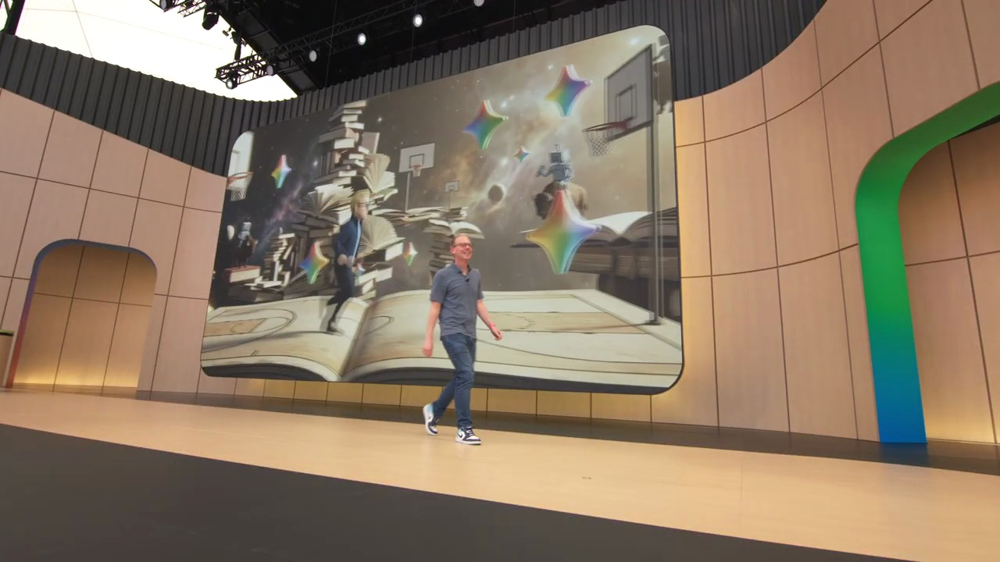
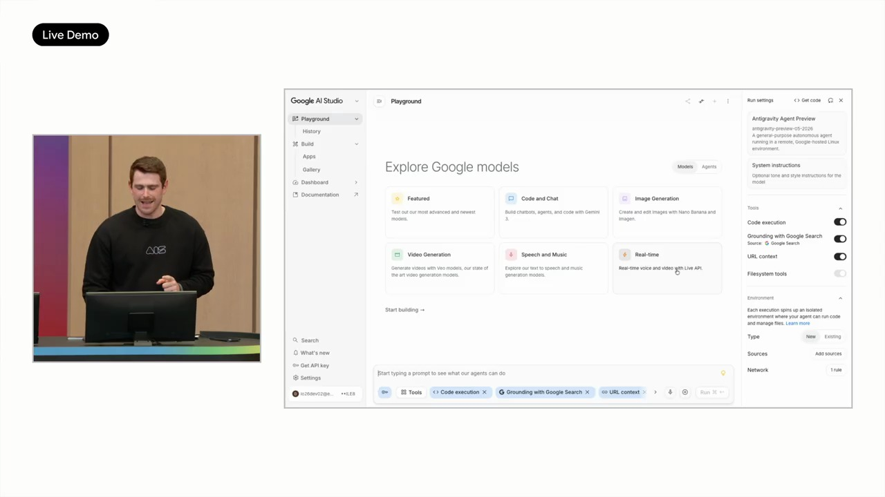
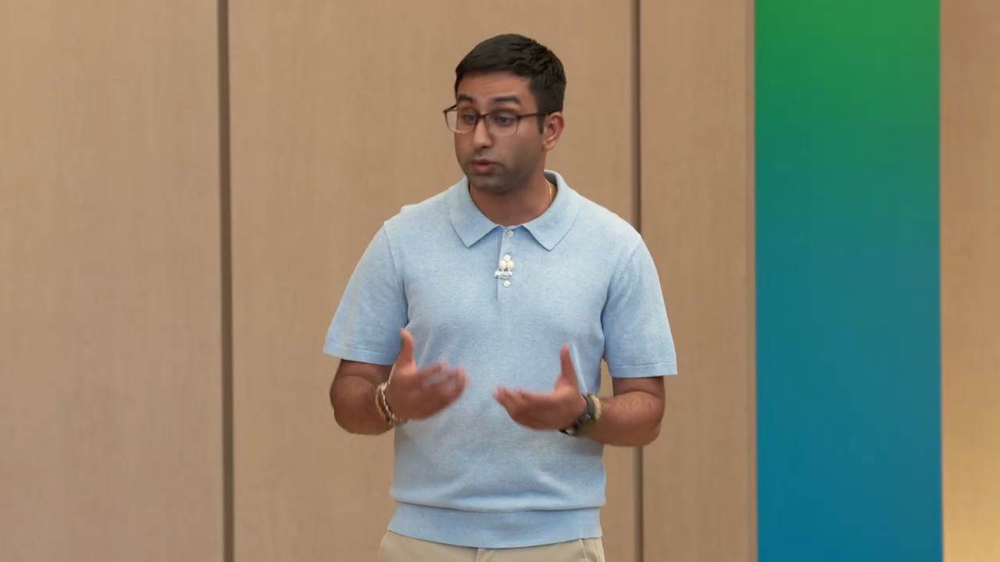
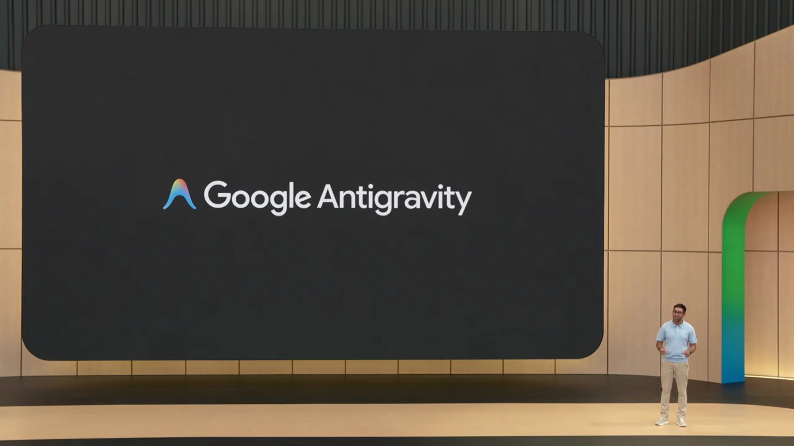
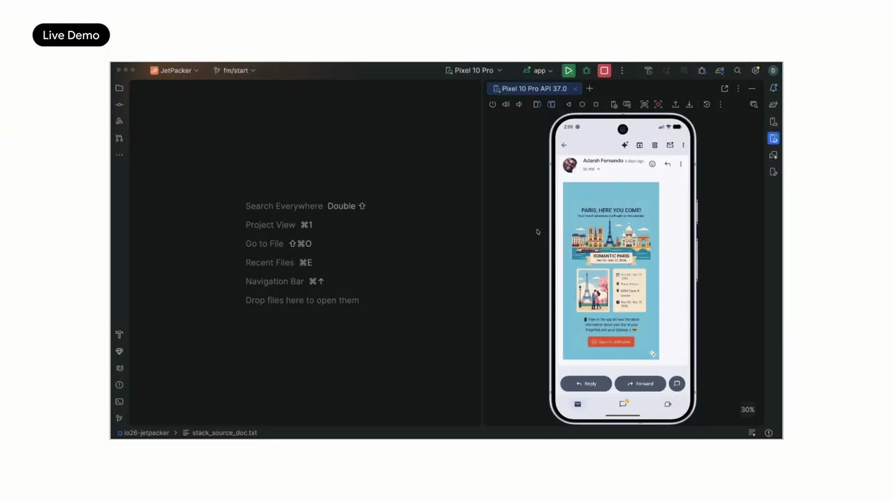
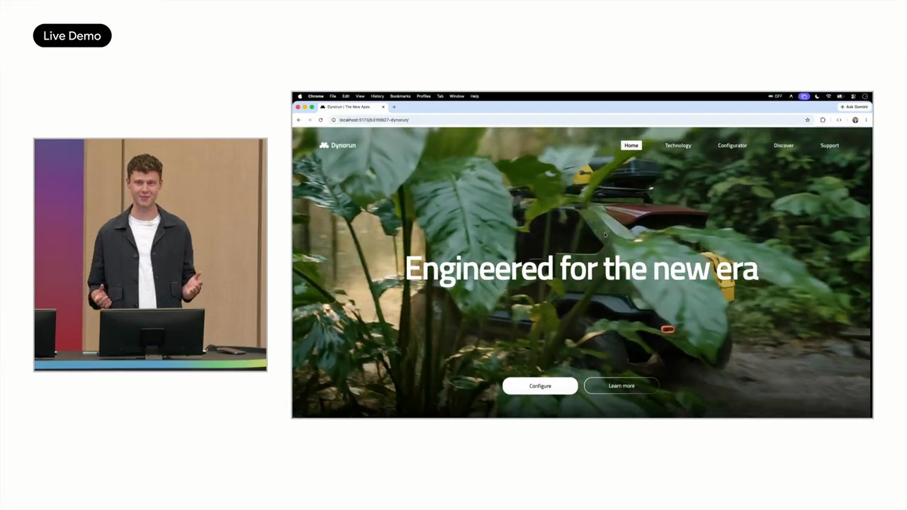

Key Moments






Summary & Script
Developer Keynote (Google I/O '26)
Source: https://www.youtube.com/watch?v=aqmpZocmR8o
Video ID: aqmpZocmR8o
Overview
Google’s I/O 2026 developer keynote introduced the next generation of AI agents built on the Gemini and Gemma model families. The company unveiled Google Antigravity, a unified agent‑centric development platform, along with managed‑agent APIs, new AI Studio capabilities, and tools for rapid deployment to web, Android, and Cloud Run. Live demos showed agents creating a full‑stack radio‑show app, generating code, assets, and even publishing to the Play Store, illustrating how developers can now build, run, and scale AI‑powered agents end‑to‑end.
New Features & Announcements
Managed Agents (Gemini API) – One‑call creation of an agent together with a secure remote Linux sandbox.
Timeline: Available today
Availability: PublicAI Studio – Agent Playground & Build – Pre‑built open‑source agent templates (e.g., AI Talk Radio) that run instantly; one‑click deployment to Cloud Run, Android, and future Play Store publishing.
Timeline: Available todayAntigravity SDK – Local‑run version of the agent harness optimized for Gemini, giving developers full programmatic control over agent execution.
Timeline: Available todayAntigravity 2.0 Desktop App – Multi‑agent workspace, dynamic sub‑agents, and scheduled‑task (cron) support for autonomous workflows.
Timeline: Available todayIntegration Add‑ons – Built‑in support for Firebase/Firestore, Google Workspace (Docs, Gmail, Calendar), and Nano Banana image generation.
Timeline: Available todayOne‑Click Export from AI Studio to Antigravity – Moves the entire project file system and context to the local SDK without losing state.
Timeline: Available today
Topics Covered
- Recap of Gemini advances – Introduction of the Omni model, Gemini 3.5 series, and the open‑source Gemma 4 model (Apache 2.0).
- Agentic shift – Moving from “AI assists” to “AI agents that execute tasks under developer direction.”
- Antigravity platform – Core agent runtime, remote sandboxing, and how it powers Gemini Spark and the coding agent.
- Managed agents – API design, security model, and real‑world example (Stitch importing design systems from GitHub).
- AI Studio demos – Creating a talk‑radio agent, generating scripts, TTS, music, cover art, and publishing the MP3.
- From prototype to production – Deploying the radio‑show app to Cloud Run, then generating a native Android app in Kotlin, previewing in‑studio, and publishing to the Play Store.
- Mobile AI Studio app – Upcoming Android client for building agents on the go (pre‑registration open).
- Antigravity 2.0 deep dive – Multi‑agent projects, dynamic sub‑agents, scheduled tasks, and IDE‑agnostic workflow.
- Fine‑tuning open models – Demonstration of using Antigravity to fine‑tune Gemma 4 without complex pipelines.
Key Takeaways
- Google is delivering a full stack for AI agents: models, managed execution, developer tooling, and cloud/edge deployment.
- Managed agents remove the infrastructure burden, letting developers focus on prompts, custom instructions, and tool integration.
- AI Studio provides a no‑code/low‑code path from prompt to deployable web, serverless, or mobile app in minutes.
- Antigravity SDK & 2.0 give power users the ability to run, orchestrate, and schedule agents locally or on any infrastructure.
- The Gemma 4 open model enables on‑device, offline AI with a tiny footprint, expanding use cases to robots, satellites, and edge devices.
- Integration with Google Workspace, Firebase, Firestore, and Nano Banana dramatically widens the ecosystem of data sources and content generation capabilities.
- Google emphasizes developer velocity: one‑click exports, instant sandbox provisioning, and automated publishing aim to shrink the time from idea to production to under an hour.
Notable Quotes
- “The biggest shift is our move towards agents, from AI that simply assists you to agents that help you get stuff done, under your direction and faster.”
- “Honestly, it feels like the hottest new programming language is Markdown, and I’m here for it.”
- “Managed agents are available starting today… you get an agent and the sandbox in a single API call.”
- “If you can go from writing 200 lines of code a day to 2,000 with an AI agent, are you actually a better engineer, or are you just vibing?”
- “Dynamic subagents… your agent can spin up specialized helpers… and scheduled tasks let agents run on autopilot.”
Podcast Script
JORDAN: Hey everyone, welcome back to the show! I'm Jordan, your go‑to for the nitty‑gritty of AI tech.
MIKE: And I'm Mike, here to bring the big picture into focus. Today we're diving into Google’s latest buzz—Gemma 4, Antigravity agents, and that crazy AI‑driven radio show demo.
JORDAN: Right, so Gemma 4 is this open‑source model under Apache 2.0 that packs high‑level reasoning into a tiny footprint—small enough to run on a phone, even on satellites.
MIKE: Which is wild because it means developers can now ship AI that works offline, no cloud dependency. Imagine a robot on Mars that can reason without a data link!
JORDAN: Exactly. And the real kicker is the Antigravity platform. It's essentially a managed agent harness that lets you spin up an agent and a secure Linux sandbox with a single Gemini API call.
MIKE: So you get the brain and the body in one package—no need to wrestle with infrastructure. That's a huge win for startups that can’t afford DevOps staff.
JORDAN: Logan’s demo showed an “AI Talk Radio” agent that pulls the latest Hacker News, scripts a five‑minute show, generates TTS voices, background music, even cover art, and spits out a ready‑to‑stream MP3. All defined in a Markdown file.
MIKE: And the fact that you can do all that just by editing Markdown feels like a new programming language for content creators. No more glue code, just declarative skill blocks.
JORDAN: Paige took that same agent and wrapped it in a real app, then deployed it to Cloud Run with a few clicks from AI Studio. The whole pipeline—from prompt to live URL—was under a minute.
MIKE: That’s the kind of frictionless experience that could turn AI prototypes into consumer products overnight. No credit card needed for the first deployment, too.
JORDAN: And they didn’t stop at web apps. AI Studio now builds Android apps directly, outputting Kotlin code, launching an emulator, even pushing to the Play Store test track.
MIKE: Which means developers can target phones without ever opening Android Studio. That could democratize mobile AI experiences for non‑engineers.
JORDAN: On the tooling side, Antigravity 2.0 introduces dynamic subagents and scheduled tasks—think agents that spin up specialist helpers or run cron‑style jobs autonomously.
MIKE: That opens the door for truly proactive AI assistants, like an agent that summarizes PRs every morning or monitors cloud health hourly without human prompting.
JORDAN: Plus, they added a one‑click export from AI Studio to the Antigravity SDK, preserving the full file system and context. So you can keep iterating locally without losing any of that prompt history.
MIKE: It’s a seamless bridge between low‑code prototyping and full‑stack development, which is exactly what many teams need to scale from an idea to production.
JORDAN: So the takeaway: Gemma 4 brings powerful, offline AI; Antigravity makes building and deploying agents as simple as a single API call; and the new tooling lets you go from Markdown to live apps in minutes.
MIKE: If you’re a developer, a content creator, or just a tech enthusiast, there’s a lot to get excited about. Thanks for listening, and we’ll catch you next time!
JORDAN: Stay curious, stay building.
MIKE: And stay tuned for more AI breakthroughs. Bye!